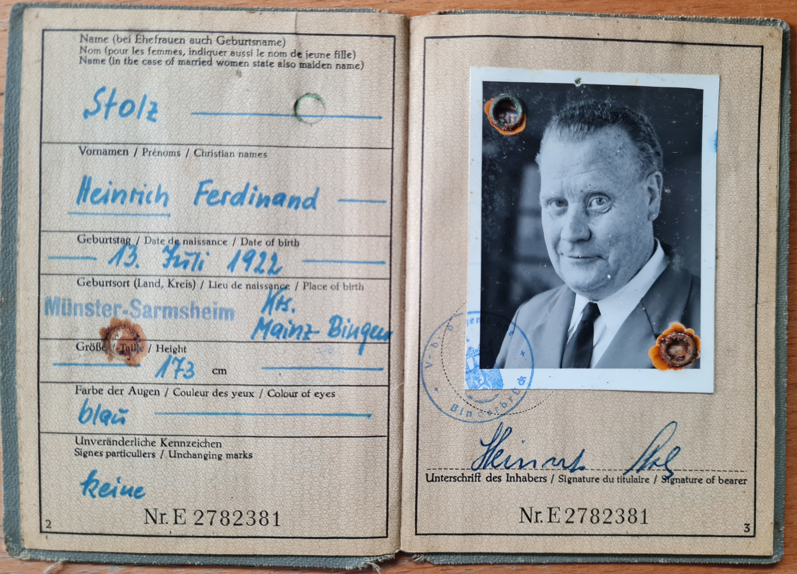
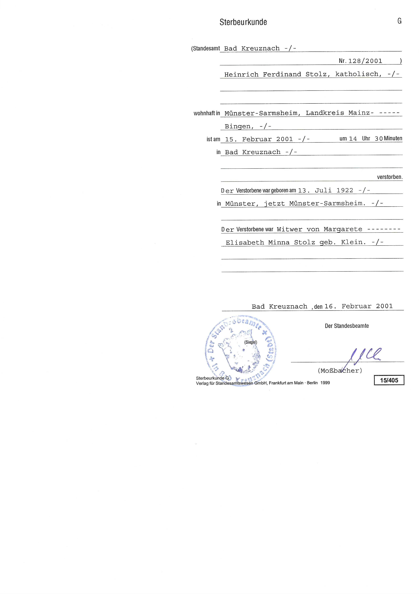
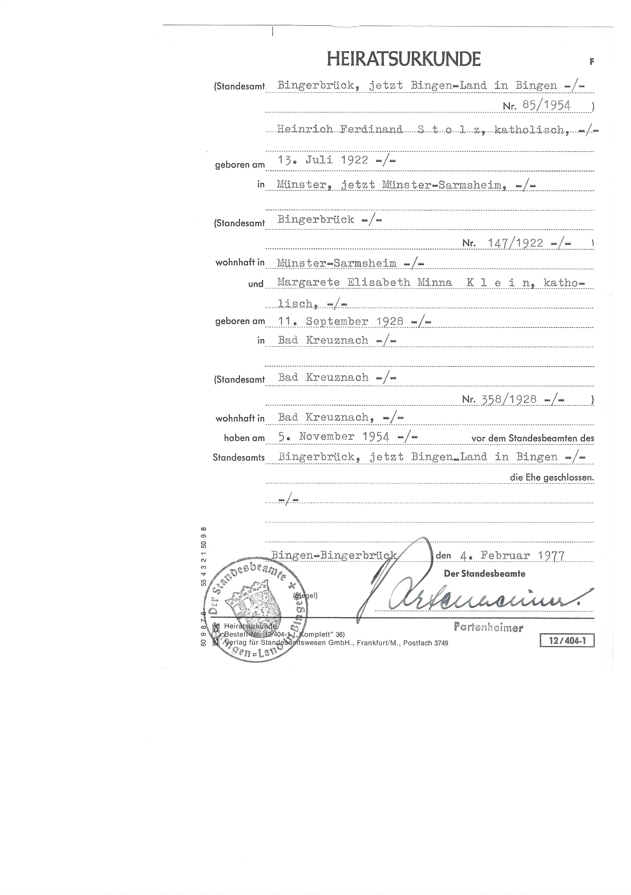
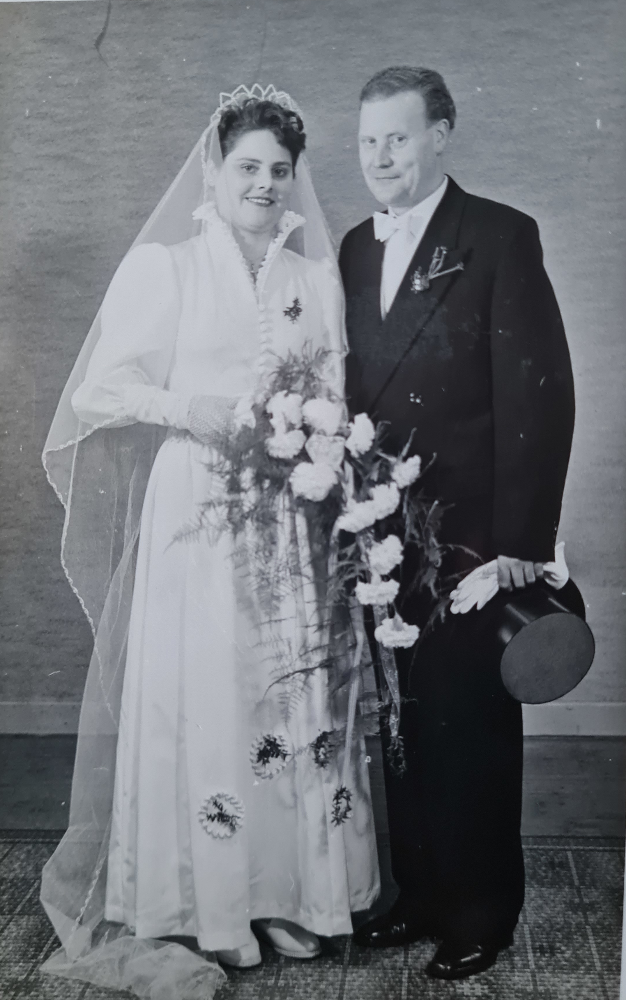

geboren am 13. Juli 1922 in Münster,
Augenfabe Blau, Größe 173 cm
wohnhaft in Münster-Sarmsheim
verstorben am 15. Februar 2001 in Bad Kreuznach



1. November 1936
Deutsche Arbeitsfront Mitgliedsbuch


30. November 1939
Facharbeiterbrief Feinmechaniker
bei den Optischen Werken
in Bad Kreuznach

1942 ... 1944


1. Oktober 1945
DGB Mitgliedsbuch


13.Juni 1951
Führerschein


5. November 1954
heiratet in Bingerbrück
Stolz, Margarete Elisabeth Minna, geb. Klein




21. November 1980
Reisepass


19. Januar 1981, Visum fuer Israel

1. Februar 1981, Einreise nach Israel
22. Februar 1981, Ausreise aus Israel
Einreise in die DDR über Drewitz

12. Oktober 1987, Einreise nach Israel
26. Oktober 1987, Ausreise aus Israel
Einreise in die DDR über Marienborn
13. Juli 1987
65 Geburtstag


13. Juli 1992
70 Geburtstag


3. ... 5. Oktober 1997
Reise nach Erl zu den Passionspielen

28. August 1999
Reichsgraf Heinrich der Stille Luftkutscher
vom Nahetal
fliegt mit der Schinderkannes Air-Lines
von Stromberg nach Duchroth
Höhe 800 mit Geschwindigkeit 25 km/h


28. Mai ... 1. Juni 1998
Reise nach Seefeld am Attersee

5. ... 14. August 1998
Reise nach La Villa Suedtirol, Dolomitenfahrt

5. ... 14. August 1998
Reise nach Ungarn, Plattensee, Budapest und Wien

11. ... 16. Oktober 1998
Reise nach Kaiserwinkle, Walchsee

7. ... 10. Juni 1999
Reise nach Stockum, Sauerland

25. ... 28. Juli 1999
Reise nach Gruech, Schweiz

4. ... 12. September 1999
Reise nach Oberdrauburg, Osttirol

3. ... 11. April 2000
Reise nach Rom

5. ... 8. Juni 2000
Reise nach Oberau, Bayern

24. Juni ... 2. Juli 2000
Reise nach La Villa Suedtirol, Dolomiten